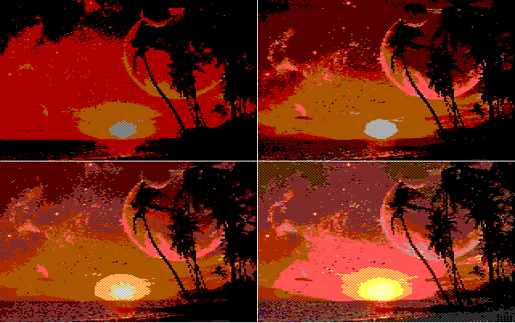
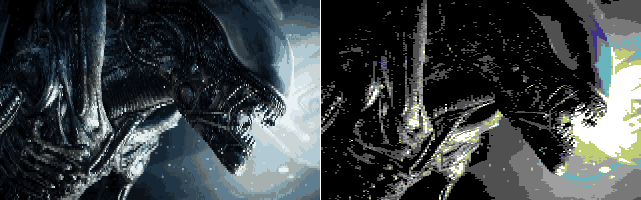
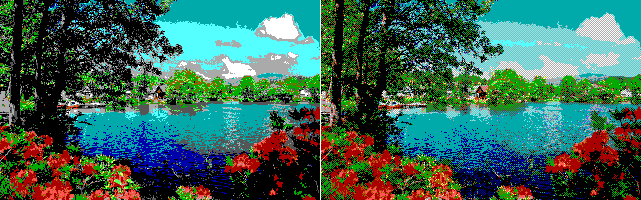
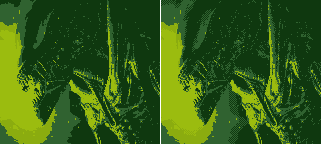
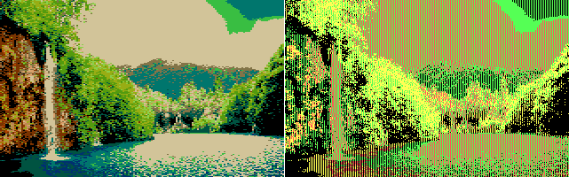
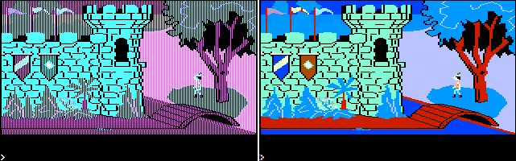
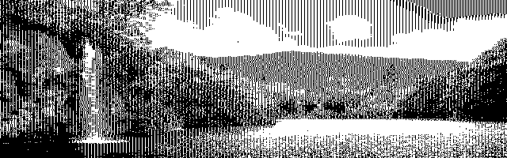
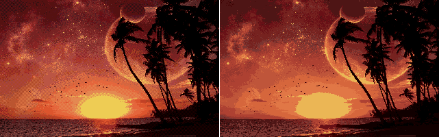
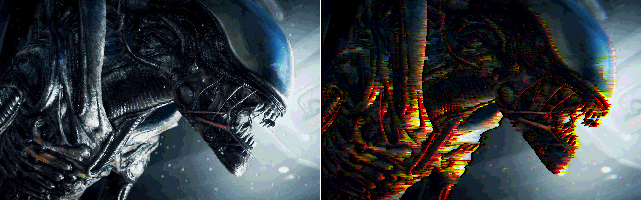

:: bitcrush.py
:: asahala 2018
==================================================================================
HOW TO USE? ======================================================================
==================================================================================
1) Install Python 3.4 or later
2) Install Pillow (if Windows, go to /python/scripts/ and type):
pip install Pillow
Running from the commandline is preferred. See instructions later on this file.
For instructions on running this from the source code, see default() in main.py
3) create /output/ folder wherever you store your *.py files
==================================================================================
WHAT ARE FIXED AND NON-FIXED PALETTE SCREENMODES? ================================
==================================================================================
FIXED PALETTE MODES use predefined unalterable palettes. Typical fixed palette
screenmodes are Gameboy, CGA, EGA (lowres) and C64. Simultaneous colors are
limited by the palette size.
Gameboy 4 colors (2-bit)
CGA 4 colors on RGBI, 16 colors on composite (6-bit)
EGA 16 colors (6-bit)
C64 16 colors (6-bit)
NON-FIXED/DYNAMIC PALETTE MODES do not have pre-defined palettes. These modes
optimize the image to a dynamically defined palette that is chosen from the
available color space. Simultaneous colors are limited by the palette size.
MCGA 256 colors (18-bit)
EGA in hi-res mode: 16 colors (6-bit)
VGA in hi-res mode: 16 colors (18-bit)
OCS 16 colors (hires), 32 colors (lowres) (12-bit)
EHB 32 colors and 32 halfbrites (12-bit)
SPECIAL MODES belong to their own group.
HAM6 4096 simultaneous colors with a palette of 16 colors (12-bit).
HAM8 Like MCGA/VGA but can display the whole 18-bit color space
simultaneously (over 200k colors).
==================================================================================
HOW BIT-DEPTH AFFECTS FIXED AND DYNAMIC PALETTES? ================================
==================================================================================
The bit-depth should not be changed when using non-fixed/dynamic/special palette
modes, as it affects the image's color space and produces "unrealistic" results.
For example, converting an image to MCGA using a bit-depth of 6 will compress the
final color space into 64 colors (2^6). This works like "posterize" in Photoshop.
In FIXED palette modes bit-depth DOES NOT affect the final color space! E.g. An
image converted into EGA by using a bit-depth of 18 will still have the regular
6-bit color space with 16 fixed colors. The bit-depth may be adjusted to fine tune
the palette translation algorithms.
Lowering the bit-depth shifts the color space (brightness on the y-axis and hue on
the x-axis) toward lighter tones, which yields darker and less detailed images
as the upwards shifting color space leaves more room for darker colors. If the
bit-depth is adjusted below the true bit-depth of the fixed palette screenmode,
some colors of the final palette will be not used at all. This may produce
interesting artistic results.
Thus, if the converted image seems too dark (or even completely black), you should
increase the bit-depth. If it looks too bright and detailed, try tuning the
bit-depth down.
Often the best results are achieved by using bit-depths from 6 upwards.

Image: Diagonally rasterized 160x200 EGA in bit-depths of 4, 6, 8 and 18
(from top left to bottom right)
==================================================================================
RESOLUTION SETTINGS ==============================================================
==================================================================================
Following settings may be used to adjust the image resolution. If not defined,
the screenmode specific default settings are used.
--resolution WIDTH HEIGHT Set resolution.
--preserve-aspect-ratio If not used, the image is scaled only to w/h.
--horizontal-lacing Double pixel width width (like in Amiga, C64 or
old Sierra-Online AGI games)
--vertical-lacing Double the number of scanlines.

Image: Vertically (EHB) and horizontally (C64) laced images.
==================================================================================
SCREENMODE SPECIFIC SETTINGS =====================================================
==================================================================================
All fixed-palette modes (CGA, EGA, C64, Gameboy) naturally support dithering and
rasterization. See documentation on setting these within the source code in
function default() in main.py
--dither Dither image to the palette.
--rasterize Use diagonal rasterization.
--rasterize-scanlines Use scanline rasterization.
--bitdepth INT Adjust color space.

Image: Non-rasterized and rasterized EGA.

Image: Non-rasterized and rasterized Gameboy.
----------------------------------------------------------------------------------
PC CGA unique parameters:
--low-intensity Set intensity bit off.
--palette INT Set CGA palette. Options are:
0: black-cyan-purple-white (2 pix per color)
1: black-red-green-yellow (2 pix per color)
2: black-cyan-red-white (2 pix per color)
3: black-white (4 pix per color)
--composite INT CGA composite modes:
0: Convert to regular CGA as shown on an RGB monitor (default)
1: Convert regular CGA image to 16-color composite
2: Convert any image into RGB rasters that will produce
16 colors on composite
3: Convert any image as if it was a CGA shown on a TV with
composite input
If the input image is in CGA, its palette can be changed by using the
--palette parameter as long as they have equal numbers of pixels per color.

Image: CGA on composite (left) and RGBI (right).

Image: Screenshot from King's Quest 1 on CGA (left) converted to composite
by using parameter --composite 1 (right).

Image: CGA in 620x200 black-and-white mode, RGBI.
----------------------------------------------------------------------------------
PC EGA may be used in the hi-res mode by adjusting resolution.
--resolution 640 350 Hi-res mode with dynamic palette.
----------------------------------------------------------------------------------
PC MCGA may be used for 256 color SVGA and MCGA/VGA.
--resolution 320 200 MCGA (default)
--resolution 640 480 SVGA+
----------------------------------------------------------------------------------
PC VGA may be used for 16-color VGA hi-res mode. Supports raster and dithering.
---------------------------------------------------------------------------------
Amiga OCS may be used in lowres and hires modes. In addition, OCS supports the
standard fixed-palette features: --rasterize, --rasterize-scanlines and --dither.
--resolution 320 200 Lowres (default). Uses 32 colors.
--resolution 640 400 --vertical-lacing Hires. 16 colors.

Image: OCS lowres with rasters (left). OCS hires (right).
---------------------------------------------------------------------------------
Amiga EHB can be sliced. Images that use no slicing (i.e. number of slices = 1)
can be --rasterize'd.
--slices INT Define number of slices. Default 1.
---------------------------------------------------------------------------------
Amiga HAM can be used in OCS or AGA modes. In addition, fringing algorithm may be
adjusted or turned off.
--bitdepth 12 HAM6 (OCS) (default)
--bitdepth 18 HAM8 (AGA)
--fast-ham Use faster fringing algorithm.
--no-fringing Disable fringing.
--ordered-transitions Use fixed modification order in pixel transitions.

Image: HAM6 with optimal 16 color palette (left). Ordered transitions with a
single color palette to demostrate fringing (right).
==================================================================================
ALL COMMANDLINE PARAMETERS =======================================================
==================================================================================
The order of the parameters is free. Most parameters have abbreviated aliases.
python main.py [parameters]
-h, --help
-f, --filename [FILENAME] (mandatory)
-m, --screenmode [SCREENMODE] (mandatory)
-b, --bitdepth [BITDEPTH]
-r, --resolution [WIDTH] [HEIGHT]
-a, --adjust [BRIGHTNESS] [CONTRAST]
-V, --vertical-lacing
-H, --horizontal-lacing
-x, --multiplier [MULTIPLIER]
-t, --save-true-resolution
-P, --preserve-aspect-ratio
-v, --verbose
-R, --rasterize
--rasterize-scanlines
-d, --dither
-p, --palette [PALETTE NUMBER]
-c, --composite [COMPOSITE MODE]
-l, --low-intensity
-s, --slices [NUMBER OF SLICES]
--fast-ham
--no-fringing
--ordered-transitions
-S, --show-preview
-n, --no-save
--debug
==================================================================================
DETAILED DESCRIPTION OF THE COMMAND LINE PARAMETERS ==============================
==================================================================================
Only MANDATORY parameter must be defined. If a parmeter is left undefined,
the image will be processed with hard-coded default settings for the
screenmode
General settings:
--debug
OPTIONAL: Print instance variables.
--multiplier [int] -x [int]
OPTIONAL: Image dimensions are multiplied.
--no-save -n
OPTIONAL: Do not save image.
--preserve-aspect-ratio -P
OPTIONAL: Preseve image's aspect ratio. The image will only be scaled
to the wanted width or height.
--save-true-resolution -t
OPTIONAL: Laced or doubled images will not be stretched when saved.
--show-preview -S
OPTIONAL: Preview image after processing. Should not be used when batch
processing files.
--verbose -v
OPTIONAL: Print additional processing information for computationally
more time consuming screenmodes like sliced EHB and HAM.
Image processing parameters:
--filename [arg] -f [arg]
MANDATORY: Argument may be an image file or a text file containing
a list of images one per each line.
--screenmode [arg] -m [arg]
MANDATORY: Define screenmode, e.g. -m C64 for the Commodore 64. Available
modes are C64, Gameboy, CGA, EGA, MCGA, VGA, OCS, EHB and HAM.
--adjust [float] [float] -a [float] [float]
OPTIONAL: Adjusts image brightness and contrast. For example, -a 1.5 1.8
increases brightness by 50% and contrast by 80%.
--bitdepth [int] -b [int]
OPTIONAL: Define color bit-depth. Must be an integer higher than 1.
Non-fixed/dynamic palette modes should use their default bit-depth.
For fixed palette modes, bit-depth is used to control the translation
algorithm and it will NOT affect the final color space! All fixed
palettes have hard-coded bit-depth. Recommended bit-depth for fixed
palette modes are 6, 8, 10 or 12. Lower values push the color space
towards white resulting into darker and more simplistic coloring.
High bit-depts provide more vivid colors and detail.
--resolution [int] [int] -r [int] [int]
OPTIONAL: Define target resolution. E.g. to produce MCGA images use
VGA with -r 320 200.
--vertical-lacing -V
OPTIONAL: Use vertical lacing, i.e. scanline doubling.
--horizontal-lacing -H
OPTIONAL: Use horizontal lacing, i.e. stretch the pixels horizontally.
--rasterize -R (fixed and dynamic palettes)
OPTIONAL: Use diagonal rastering on fixed and some dynamic palette modes.
Incompatible with dithering.
--rasterize-scanlines (fixed and dynamic palettes)
OPTIONAL: Use scanline rastering on fixed and some dynamic palette modes.
Incompatible with dithering.
--dither -d (fixed and dynamic palettes)
OPTIONAL: Dither image to a fixed palette. Incompatible with rasterization.
--palette [int] -P [int] (CGA only)
OPTIONAL: If CGA is selected, define which palette to use. Option is given
as an integer from 0 to 2. See general screenmode description for more info.
--low-intensity -l (CGA only)
OPTIONAL: Use low-intensity palette for CGA. Incompatible with --composite.
--composite [int] -c [int] (CGA only)
OPTIONAL: Mimic different CGA outputs on different monitors. See
available modes from the general screenmode description.
--slices [int] -s [int] (EHB only)
OPTIONAL: Define the number of slices for Amiga EHB mode.
--no-fringing (HAM only)
OPTIONAL: Disable Amiga HAM fringing effect.
--fast-ham (HAM only)
OPTIONAL: Use fast comparison when producing HAM fringes. About
50% faster to compute.
--ordered-transitions (HAM only)
OPTIONAL: Force fringing algorithm to modify pixels in R->G->B order.
==================================================================================
EXAMPLE USAGE ====================================================================
==================================================================================
python main.py -f test.png -b 12 -r 320 200 -H -m EGA --rasterize -S
Produces an EGA image from (-f) test.png in horizontally laced (-H) 320x200
resolution (-r) with rasterized (--rasterize) colors and 12-bit recoloring (-b).
Image will be previewed (-S).
==================================================================================
Troubleshooting ==================================================================
==================================================================================
Prob: My EGA, CGA, C64 or Gameboy image looks dark.
Sol: Try increasing the --bitdepth.
Prob: My EGA, CGA, C64 or Gameboy image still looks dark.
Sol: Try adjusting the brightness and contrast with --adjust
Prob: It still looks like crap.
Sol: Some images just don't translate well into certain screenmodes.
==================================================================================
-- 2018-02-22 21:37